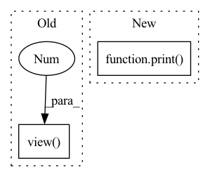

Pattern ID :100
Before Change
def forward(self, x):
x = self.features(x)
x = x.view( x.size(0), -1 )
x = self.classifier(x)
return x
After Change
def forward(self, x):
print("x.shape:",x.shape)
x = self.features(x)
print( "x.shape:",x.shape)
// x = x.view(x.size(0), -1)
x = self.classifier(x)
print("x.shape:",x.shape)
return xIn pattern: SUPERPATTERN
Frequency: 4
Non-data size: 2
Instances Fragment ID: 428788
Project Name: cbica/gandlf
Commit Name: c1e85a74696e576c03ea9be291ecfe1ba664b1d5
Time: 2021-06-15
Author: sarthak.pati@hotmail.com
File Name: GANDLF/models/pool_test.py
M Class Name: POOL_TEST
N Class Name: POOL_TEST
M Method Name: forward(2)
N Method Name: forward(2)
M Parent Class: nn.Module
N Parent Class: nn.Module
M File Name: GANDLF/models/pool_test.py
N File Name: GANDLF/models/pool_test.py
M Start Line: 64
M End Line: 65
N Start Line: 83
N End Line: 88
Before Change
pd = torch.det(Aup) * torch.det(Adown)
out *= pd
return -0.5*out.view(-1 , self.nconfs)
def _forward_loop(self, MO, d2MO, return_local_energy=False):
""" Compute the kinetic energy using the trace trick
for a product of spin up/down determinantAfter Change
// product
out = (btrace(iAup@Bup) + btrace(iAdown@Bdown))
print( out.shape)
// multiply by det if necessary
if not return_local_energy:
pd = torch.det(Aup) * torch.det(Adown) Fragment ID: 428786
Project Name: nlesc-jcer/qmctorch
Commit Name: 81bc1246590de18390d900e4d50f3145451d5185
Time: 2019-12-13
Author: nicolas.gm.renaud@gmail.com
File Name: deepqmc/wavefunction/kinetic_pooling.py
M Class Name: KineticPooling
N Class Name: KineticPooling
M Method Name: forward(6)
N Method Name: forward(6)
M Parent Class: nn.Module
N Parent Class: nn.Module
M File Name: deepqmc/wavefunction/kinetic_pooling.py
N File Name: deepqmc/wavefunction/kinetic_pooling.py
M Start Line: 67
M End Line: 74
N Start Line: 63
N End Line: 77
Before Change
// seq - [batch_size, seq_len]
pos = torch.arange(0, seq.shape[1]).unsqueeze(0).repeat(seq.shape[0], 1).to(self.args.device)
seq = self.dropout((self.tok_embed(seq) * self.scale) + self.pos_encoding(pos))
print(any(torch.isnan(seq).view(-1 ) ))
seq = seq.transpose(0, 1)
out = self.transformer(seq, seq).transpose(0, 1)
print(seq, "\n", out)After Change
def forward(self, seq):
// seq - [batch_size, seq_len]
mask = self._generate_square_subsequent_mask(seq.shape[1])
print( mask)
pos = torch.arange(0, seq.shape[1]).unsqueeze(0).repeat(seq.shape[0], 1).to(self.args.device)
seq = (self.tok_embed(seq) * self.scale) + self.pos_encoding(pos)
seq = seq.transpose(0, 1)
out = self.transformer(seq, seq).transpose(0, 1) Fragment ID: 428784
Project Name: ammesatyajit/videobert
Commit Name: da701dd8f2ec37d38cc5c66982a1894cda0fef86
Time: 2020-09-19
Author: ammesatyajit@gmail.com
File Name: VideoBERT/train/custom_vid_transformer.py
M Class Name: VideoTransformer
N Class Name: VideoTransformer
M Method Name: forward(2)
N Method Name: forward(2)
M Parent Class: nn.Module
N Parent Class: nn.Module
M File Name: VideoBERT/train/custom_vid_transformer.py
N File Name: VideoBERT/train/custom_vid_transformer.py
M Start Line: 157
M End Line: 161
N Start Line: 156
N End Line: 159